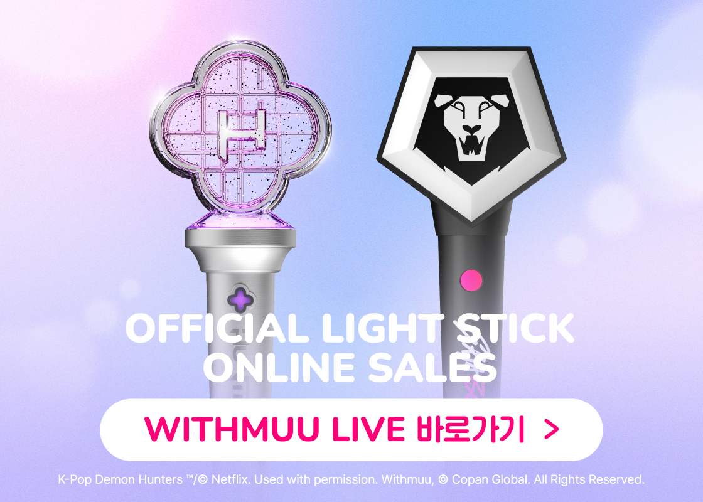

从零上手 WITHMUU：K-Pop 粉丝买专辑、抽签名会完整教程
WITHMUU 是 K-Pop 粉丝最常用的专辑购买平台之一，支持预购、签名会抽奖、线下抽签等玩法。这篇教程带你从注册到下单，避开混合购买延迟、预购不可取消等高频坑。
读完这篇教程，你就能独立在 WITHMUU 上完成注册、选购专辑、正确处理预购与现货订单、追踪国际物流，并且不会错过任何一次签名会抽奖机会。
准备工作
WITHMUU 是由 COPANGLOBAL 运营的韩国 K-Pop 粉丝专属购物平台，主打偶像专辑、应援棒、官方周边，同时也是多家经纪公司粉丝签名会的唯一或主要合作渠道。
开始之前你需要准备：
- 一个常用邮箱（注册用）
- 可支付国际订单的信用卡或 PayPal
- 准确的英文收货地址（EMS 国际配送）
- 一个靠谱的邮箱——WITHMUU 所有订单通知、签名会中奖结果都靠邮件推送
第一步：注册账号并完成信息填写
打开 WITHMUU 官网，点击右上角「Join」进入注册流程。注册本身很简单，邮箱验证后就能登录，但有几个地方建议提前做好：
收货地址用英文填写——EMS 是国际物流，中文地址会导致清障碍派送问题。建议用拼音或标准英文格式，比如「Room 123, Building 4, XX Community, Chaoyang District, Beijing」。
手机号填常用的——部分活动中奖后可能需要短信确认参与资格，留个能收到国际短信的号码更稳妥。
注册完成后先别急着下单，去「My Page」里把收货地址、支付方式都预存好，等遇到限量专辑开售时直接秒付，比临时填信息快好几步。习惯手机操作的话，APP 安装包从官方下载就能拿到。
第二步：选购专辑——区分预购和现货是关键
WITHMUU 上的商品分两种状态，这个区别直接影响你什么时候能拿到货，甚至能不能拿到签名会资格：
现货商品：有库存，支付后 1-3 天内从韩国仓库发出，EMS 国际配送全程 7-15 天送达。适合急着用的东西，比如演唱会前买应援棒。
预购商品：专辑还没正式发行，WITHMUU 要等发行日之后才能从制作方进货。发行日起算 1-2 周内陆续发货，再加上国际物流，实际拿到手可能要等三到四周。

一个绝对不能踩的坑：混合购买延迟
如果你把预购商品和现货商品放在同一个购物车里下单，所有商品都会等预购商品准备好后一起发出——哪怕现货应援棒两天就能发货，也会被预购专辑拖上两周。
正确做法很简单：预购和现货分开下单。虽然多付一次运费，但现货能及时拿到，不用傻等。
第三步：下单并确认是否参与签名会抽奖
很多粉丝买 WITHMUU 专辑不止是为了专辑本身，更是冲签名会资格来的。这里有几个要点要记牢：
怎么判断专辑能不能抽签名会——活动期内的专辑详情页会有明确的签名会标识，写明活动截止日期、购买后是否自动参与抽奖。大部分情况是「购买即自动参与」，不用额外报名。
购买越多，中奖概率越高——但热门活动可能会限制单账号购买张数，防止黄牛囤货刷概率。详情页会标注限购数量，别一口气买超了被砍单。
预购阶段就买——WITHMUU 签名会的优势之一是预购阶段就能参与，是最早一批能拿到资格的渠道。而且预购销量会计入 Hanteo Chart，相当于买一张专辑同时支持偶像冲榜和抽签名会，一举两得。
下单时注意看结算页面的活动提示，确认自己要买的专辑确实在活动范围内。签名会的完整参与规则和近期活动列表可以查WITHMUU文档。
第四步：物流追踪——EMS 国际配送全流程
WITHMUU 用的是 EMS 国际快递，发货后会通过邮件发送运单号。完整的时间线大概是这样：
支付完成 → 商品准备 → 韩国仓库发出 → 国际运输 → 目的国清关 → 派送
即时 1-3天 1天 3-10天 1-3天 1-3天追踪物流分两段：韩国 EMS 官网查国际段（从韩国发出到到达你国家海关），你国家的邮政官网查派送段（比如中国邮政、USPS）。运单号在 WITHMUU 的「My Orders」里也能随时看到，不用担心邮件丢了找不到。
配送可能延迟的几种情况
海关随机抽查会多花 1-5 天，这种情况不用慌，属于正常流程。圣诞节和新年期间全球快递拥堵，可能额外等 3-7 天。如果收件地址比较偏远，派送本身也会慢 1-3 天。这些都是预估范围之外的合理延迟，不是丢件。
常见卡点：三个新手最容易翻车的地方
卡点一：预购订单不能取消
WITHMUU 规定预购商品支付完成后无法取消。如果后来发现买错了或者不想要了，只能等发货后走退换货流程——7 天无理由退，但运费得自己掏。所以预购下单前一定要确认清楚，别冲动付款。
卡点二：签名会中奖后退专辑 = 资格取消
如果运气好抽中了签名会，但后来又把专辑退了，签名会资格会自动取消。经纪公司和 WITHMUU 是绑定专辑订单来确认中奖身份的，退了专辑等于失去了参与凭证。想清楚再退。
卡点三：直接寄快递回去会被拒收
退换货不能自己随便找个快递寄——WITHMUU 的退换流程要求你先通过客服中心或 1:1 公告栏咨询，拿到 CS 负责人给的退货地址和流程指引后再寄。自己瞎寄大概率被拒收，还白付来回运费。
进阶玩法：线下店与幸运抽签
如果有机会去韩国，WITHMUU 在弘大和明洞都有线下门店，体验和线上完全不一样。
线下店最有意思的是幸运抽签机——每在店里买一张专辑就能触发一次抽签，机器有灯光和音效动画，仪式感拉满。奖品以额外特典小卡、贴纸为主，偶尔能抽到 WITHMUU ONLY 小周边，概率很小但值得期待。
线下购买的专辑同样计入 Hanteo Chart，而且当场就能拿到手，不用等国际快递。如果刚好赶上新专辑发行日，弘大店门口经常粉丝聚集，排队抽签的氛围特别好，是 K-Pop 粉丝线下社交的好机会。
关于退换货的实用提醒
最后补一个容易忽略的细节：WITHMUU 的退换货期限分两种情况。主观不想要的 7 天无理由退货，从快递妥投那天开始算；商品有缺陷或发错的 90 天内都能申请。两种情况的运费承担也不一样——无理由退是买家承担来回运费，商品问题则由卖家全包。
别等到超期了才想起来退，7 天是从妥投日开始算的，包括周末。快递显示签收的那一刻倒计时就启动了。
WITHMUU 作为 K-Pop 粉丝购物的主流渠道，操作上手不难，但预购现货分开下单、签名会绑定专辑订单、退换货先走客服这几个规则，是新手最容易踩的坑。把这些记住，剩下的就是选好专辑、卡准活动截止时间，然后坐等快递和抽奖结果了。如果你想更系统地了解这类 K-Pop 专辑购买平台的玩法和注意事项，整理好的参考资料在 GitHub、Gitee、GitCode 三个仓库都能拿到，国内访问选 Gitee 或 GitCode 会更顺畅。